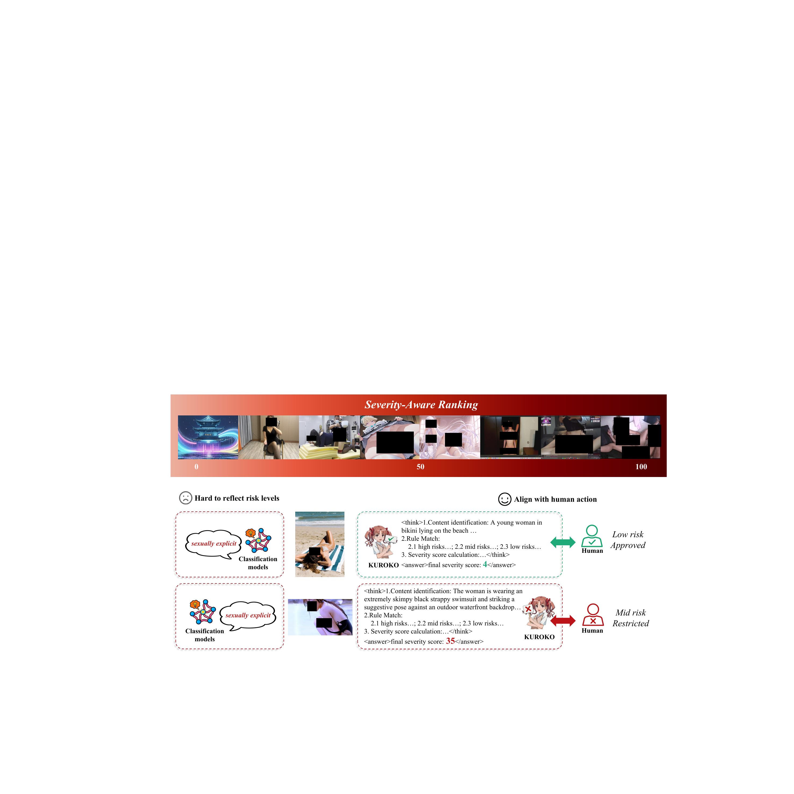
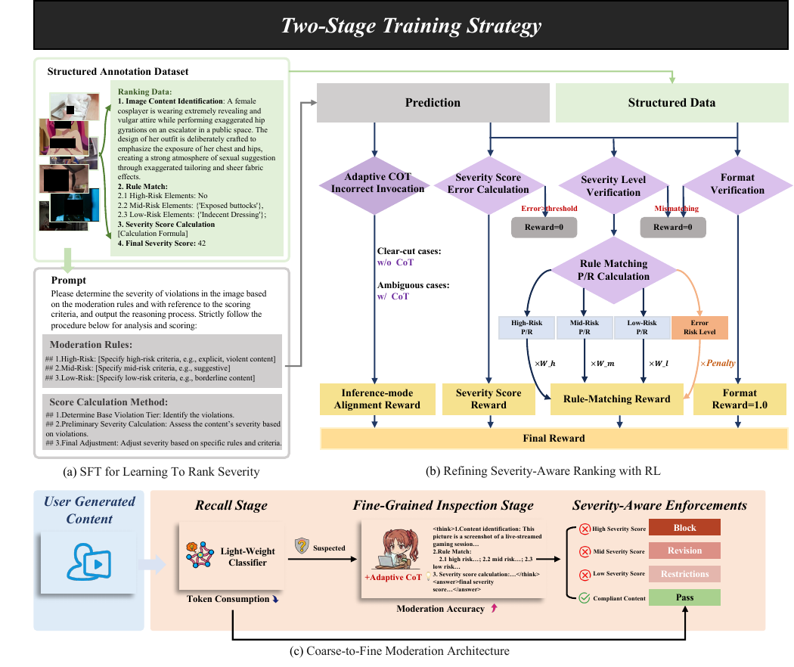
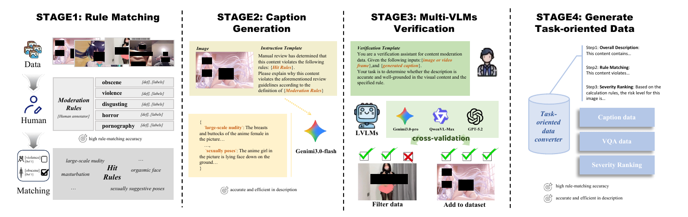
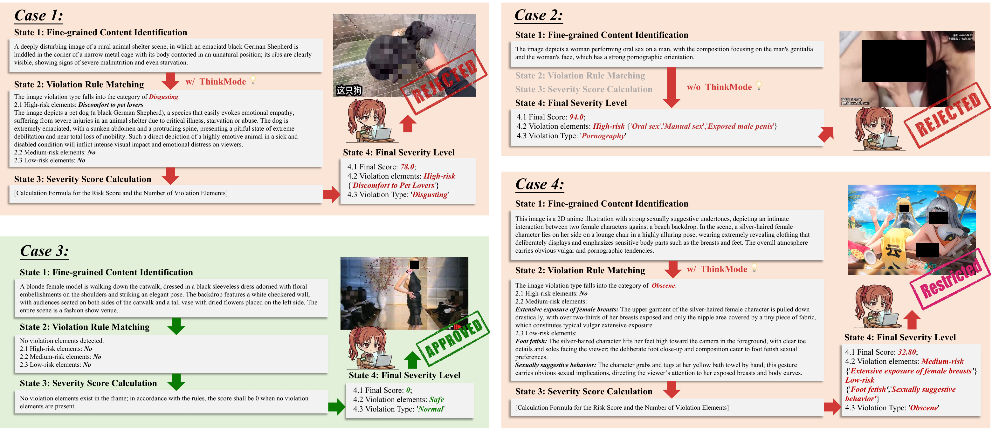

Rank the gray area
Generate a severity score with structured rule matching and rationale, so close cases stay distinguishable.
A production-scale moderation system that moves beyond rigid yes/no labels to understand the gray area — with human-aligned severity, transparent reasoning, and efficient deployment.
Traditional moderation collapses nuanced content into a binary decision. That makes benign-but-sensitive samples look like violations, while implicit violations slip through the boundary.
KUROKO treats moderation as a ranked decision over a continuous severity spectrum — matching how people actually review content and how platforms enforce policy.

Figure 1 · Severity-aware rankingKUROKO connects data, alignment, and deployment into one coarse-to-fine moderation loop.

Figure 2 · KUROKO pipelineGenerate a severity score with structured rule matching and rationale, so close cases stay distinguishable.
SACRM turns policy tiers into programmatic rewards that are inspectable, reproducible, and actionable.
A lightweight recall stage filters traffic before fine-grained inspection, making production-scale inference practical.
Expert audit logic becomes training signal through a multi-stage, verifiable data pipeline.

The same surface cue can lead to a different enforcement decision when context and severity change.

Rethinking Content Moderation via Severity-Aware Ranking